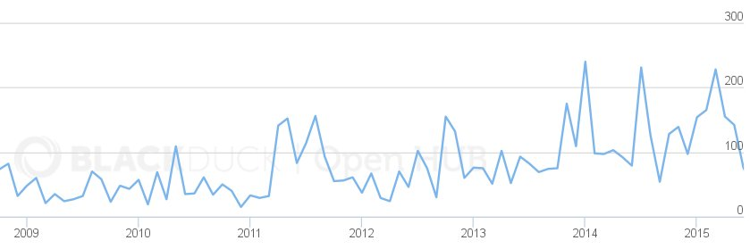
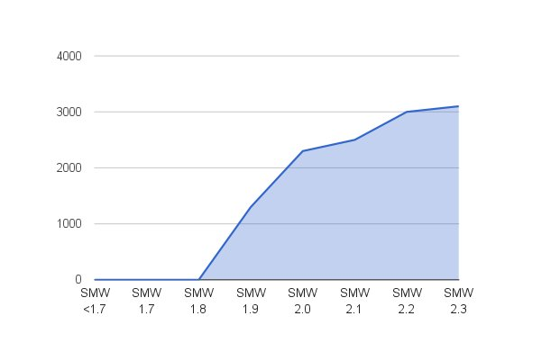

Codebase
~25 developers last year, ~90 total
~1500 code changes (up ~0%, ~50%)

Semantic Versioning standard
MAJOR.MINOR.PATCH
2.3.0
BREAKS.FEATURES.FIXES
Want only bugfixes? ➜ 2.3.x
New features but no b/c breaks? ➜ 2.x
semver.org
Releases
- 2.1.0 (+ 2.1.1, 2.1.2 & 2.1.3)
- 2.2.0 (+ 2.2.1, 2.2.2 & 2.2.3)
- 2.3.0
3 feature releases + 6 bugfix releases
Contributors
- MWJames
- Jeroen De Dauw
- Karsten Hoffmeyer (kghbln)
- Felipe de Jong (jongfeli)
- Vitaliy Filippov (vitalif)
- Chris Koerner
- Yaron Koren
- Stephan Gambke
- Mark A. Hershberger
- paladox
- Hermann Schwärzler
- Amir E. Aharoni
- Joel K. Pettersson
- Purodha
- umherirrender
- Kunal Mehta (legoktm)
- paladox2015
- Arek Korbik
- Km4tx
- Joel K. Pettersson
- Niklas Laxström
- TranslateWiki.net
Tests
0%
➜ ~20%
➜ 66%
➜ 77%

All kittens responding nominally
sandbox.semantic-mediawiki.org
New features in SMW 2.1 - 2.3
Platform compatibility
- Added MediaWiki 1.24 support (SMW 2.1)
- Added MediaWiki 1.25 support (SMW 2.2)
- Added HHVM 3.3+ support (SMW 2.1)
- Added beta support for PHP 7 (SMW 2.3)
- Added full PostgreSQL support (SMW 2.3)
SPARQLStore
- 2.1: concepts
-
2.1: regex queries
Page values: [[Title::~Sample*]] [[Title::!~Sample tes*]]
URL values: [[Url::~http://*query=*]] [[Url::~*ccc*]]
- 2.3: redirects
- 2.3: subcategories + subproperties
SQLStore feature parity!
SMW 2.0 v SMW 2.3
- Fuseki
- Virtuoso
- 4store
- Sesame
- Fuseki
- Virtuoso
- 4store
- Sesame
- Blazegraph
semantic-mediawiki.org/wiki/Compatibility
Experimental feature added in SMW 2.3
MediaWiki compatibility
| SMW 1.9 | 1.19 | 1.20 | 1.21 | 1.22 | | | | | |
|---|
| SMW 2.0 | 1.19 | 1.20 | 1.21 | 1.22 | 1.23 | | | | |
|---|
| SMW 2.3 | 1.19 | 1.20 | 1.21 | 1.22 | 1.23 | 1.24 | 1.25 | | |
|---|
| SMW 2.4 | 1.19 | 1.20 | 1.21 | 1.22 | 1.23 | 1.24 | 1.25 | 1.26 | |
|---|
| SMW 3.0 | | | | | 1.23 | 1.24 | 1.25 | 1.26 | 1.27 |
|---|
PHP in SMW 3.x
- Full PHP 7 support
- Drop support for EOL PHP: 5.3 and 5.4
- Possibly drop fix-only PHP: 5.5
Removals in SMW 3.x
- "type" namespace (deprecated in SMW 1.6)
- Maintenance script aliases such as SMW_setup.php (renamed in 2.0)
- Possibly Special:SemanticStatistics (Special:Statistics since 1.9)
New features
New quantity type?
Multilingual support??
Contributing to the project
- Create feature requests
- File bugs you encounter
- Become part of the testers group
- Add or enhance documentation
- Add or enhance translations
- Answer questions and participate in discussions
- Code review
- Contribute code (correctly)
Small and simple contributions are much appreciated
Questions?
bit.ly/smw-2015
Special:Cattribution
- The awesome work presented: SMW community
- Slides: CC BY-SA 3.0, Jeroen De Dauw
- Included images variously licensed, often unknown
- Slide engine: reveal.js, Copyright (C) 2015 Hakim El Hattab